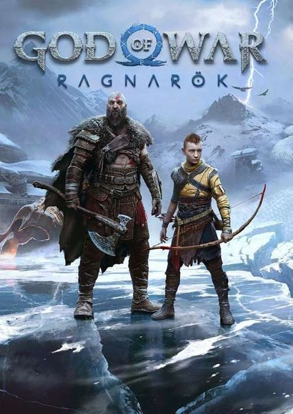
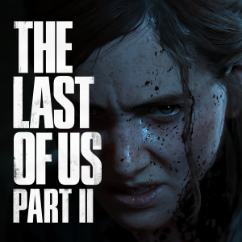

Videó játékok
God of war

A God of War Ragnarök a 2018-as God of War közvetlen folytatása, amely Kratos és fia, Atreus történetét viszi tovább a skandináv mitológia világában. A közelgő Ragnarök, az istenek végső háborúja elkerülhetetlennek tűnik, miközben apa és fia a saját sorsukkal és döntéseik következményeivel kénytelenek szembenézni. Atreus egyre inkább keresi saját kilétét és szerepét a próféciákban, míg Kratos mindenáron meg akarja védeni fiát attól az úttól, amely egykor őt magát is pusztulásba sodorta. A történet középpontjában a sors és a szabad akarat kérdése áll: vajon valóban előre megírt végzet irányítja az isteneket, vagy képesek megváltoztatni azt tetteikkel? A kaland során a játékos bejárja mind a kilenc birodalmat, miközben régi és új szövetségesek csatlakoznak Kratoshoz. Az események fokozatosan Odin manipulációi, Thor haragja és az óriások öröksége köré épülnek, mígnem kitör Ragnarök. A végső összecsapás nemcsak az istenek sorsát dönti el, hanem lehetőséget teremt a megváltásra és egy új jövő kezdetére is. A God of War Ragnarök története érzelmekben gazdag, látványos és mély mondanivalóval rendelkező epikus utazás, amely a sorozat egyik legérettebb fejezeteként mutatja be Kratos átalakulását pusztító istenből felelősségteljes védelmezővé.
Red dead redemption

A Red Dead Redemption 2 a vadnyugat hanyatlásának idején játszódó, epikus nyílt világú akció-kalandjáték, amely az outlaw élet utolsó éveit mutatja be. A történet középpontjában Arthur Morgan, a Van der Linde banda tapasztalt tagja áll, aki hűsége, lelkiismerete és a túlélés között őrlődik egy gyorsan változó világban. A banda vezetője, Dutch van der Linde egyre kétségbeesettebb és kiszámíthatatlanabb döntéseket hoz, miközben a törvény szorítása és a modern civilizáció terjedése fokozatosan ellehetetleníti a szabad életet. Arthur a menekülések, rablások és konfliktusok során szembesül azzal, hogy az eszmények, amelyekhez eddig ragaszkodott, lassan összeomlanak. A történet előrehaladtával Arthur súlyos betegséggel küzd meg, ami arra kényszeríti, hogy átértékelje tetteit és örökségét. Döntései nemcsak saját sorsát határozzák meg, hanem hatással vannak a banda jövőjére is. A játék érzelmi csúcspontján a hűség, az árulás és a megváltás kérdései kerülnek előtérbe. A Red Dead Redemption 2 egy mélyen emberi, lassan kibontakozó történet a szabadság elvesztéséről, az elmúlásról és a becsületről. Látványos világával, részletgazdag karaktereivel és erőteljes narratívájával a videojáték-történet egyik legemlékezetesebb élményét nyújtja.
Last of us

A The Last of Us Part II egy sötét, érzelmileg megterhelő akció-kalandjáték, amely a posztapokaliptikus világ kegyetlenségét és az emberi bosszúvágy pusztító erejét állítja középpontba. A történet évekkel az első rész eseményei után játszódik, amikor Ellie látszólag békés életet él Jackson közösségében. A nyugalom azonban hamar szertefoszlik egy brutális esemény következtében, amely Elliet bosszúhadjáratra kényszeríti. Útja során egyre mélyebbre süllyed az erőszak spiráljában, miközben a játék párhuzamosan egy másik szemszöget is bemutat, árnyalva a konfliktusok valódi természetét. A történet folyamatosan megkérdőjelezi a jó és rossz közötti határvonalat, és arra kényszeríti a játékost, hogy együttérezzen olyan karakterekkel is, akiket korábban ellenségként látott. A cselekmény előrehaladtával a veszteség, a bűntudat és az identitás kérdései kerülnek előtérbe. Ellie útja nem hősi történet, hanem fájdalmas önvizsgálat, amely megmutatja, hogyan képes a gyász és a harag mindent felemészteni. A végkifejlet nem a megnyugvást, hanem a felismerést helyezi előtérbe: az erőszak ritkán hoz valódi megváltást. A The Last of Us Part II merész narratívájával, összetett karaktereivel és érzelmi mélységével egy megosztó, mégis kiemelkedő alkotás, amely hosszú időre nyomot hagy a játékosban, és új szintre emeli az interaktív történetmesélést.